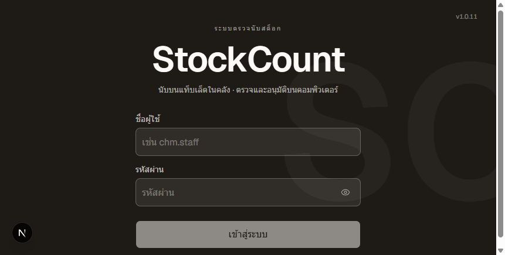
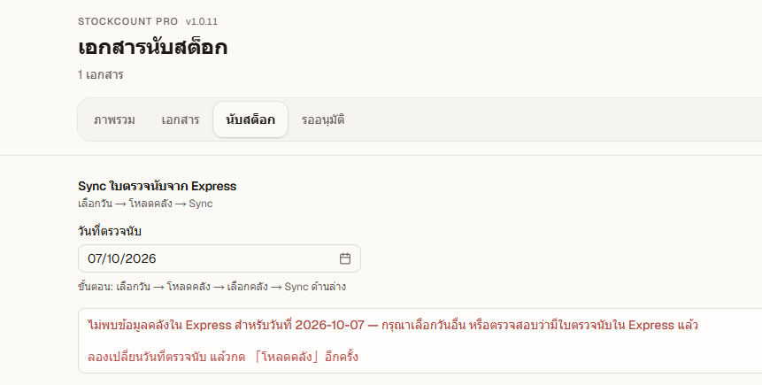
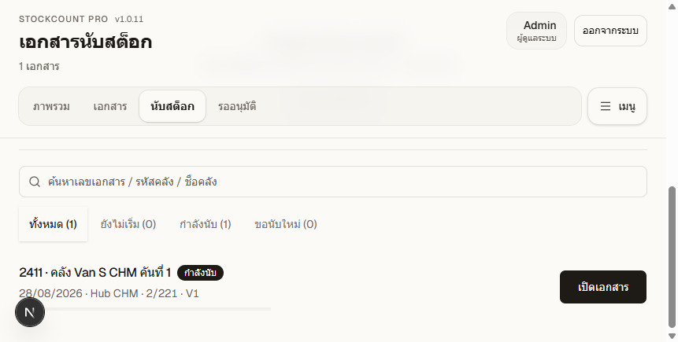
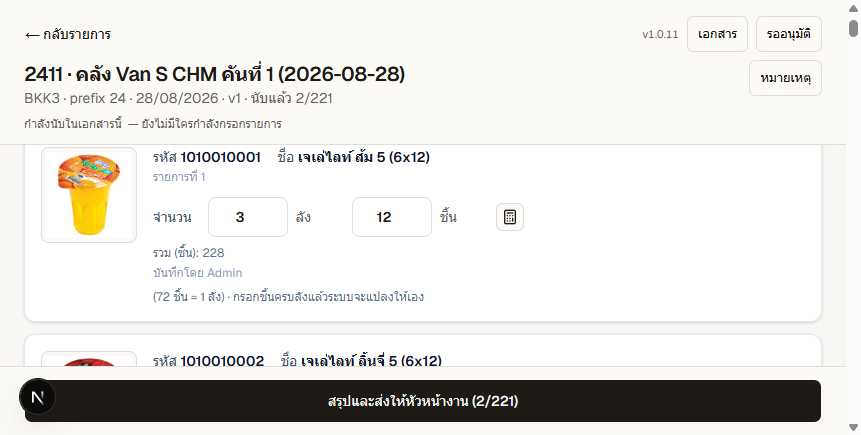
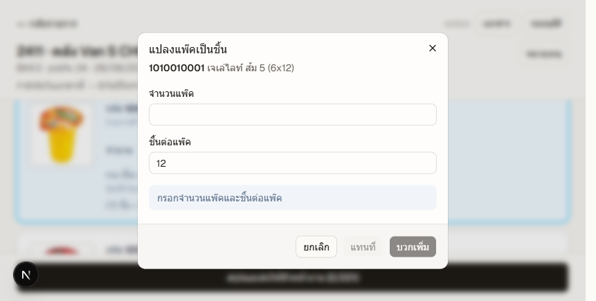
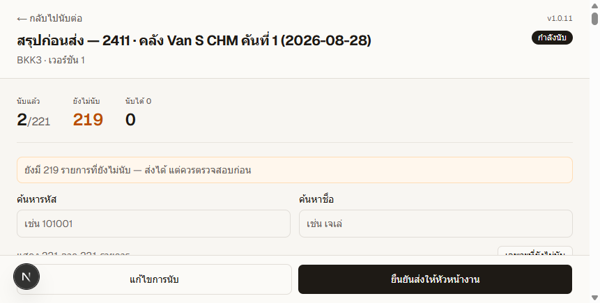
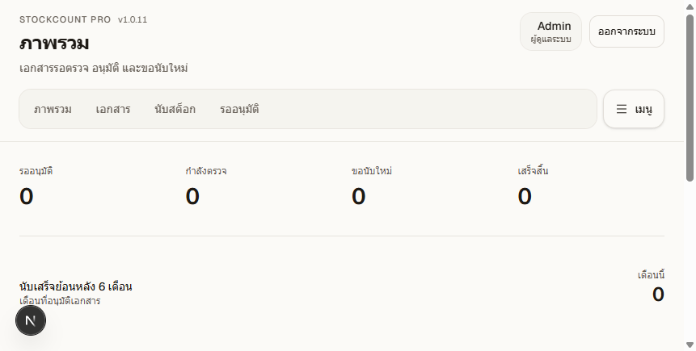
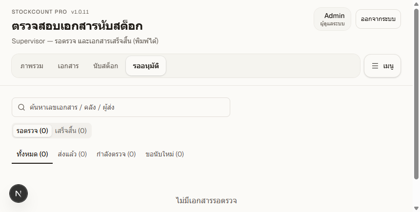
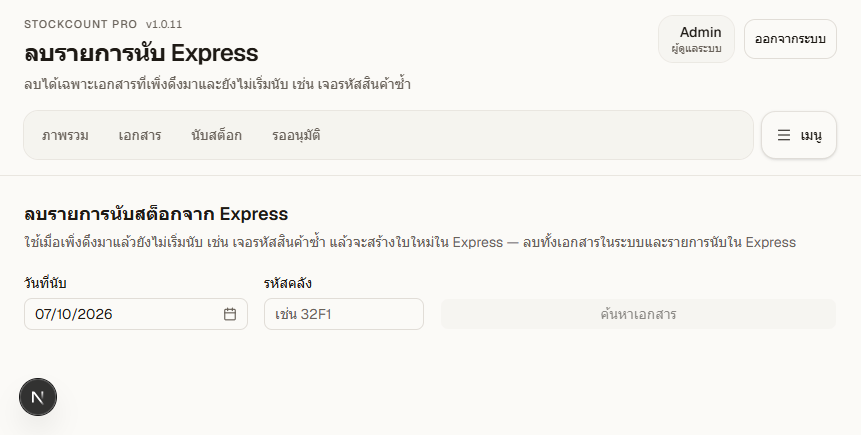

ก่อนอ่าน
หนึ่งคลังใน Express คือหนึ่งเอกสารใน StockCount Pro พนักงานนับบนแท็บเล็ตหรือมือถือ แล้วส่งให้หัวหน้างานตรวจ หัวหน้างานอนุมัติแล้วระบบส่งผลนับกลับ Express และพิมพ์ใบตรวจนับได้
วันนี้ยังไม่มีเอกสารสถานะส่งแล้วหรือเสร็จสิ้น จึงไม่มีภาพหน้าตรวจเอกสาร หน้าต่างอนุมัติ หน้าต่างขอนับใหม่ และหน้าพิมพ์ ขั้นตอนเหล่านั้นเขียนตามปุ่มจริงในระบบ
ส่วน A — พนักงานนับ
ใช้กับบทบาทพนักงานและผู้นับ หลังเข้าสู่ระบบระบบเปิดหน้ารายการนับสต็อกให้ทันที
1. เข้าสู่ระบบ
- เปิดหน้าเข้าสู่ระบบ
- กรอกชื่อผู้ใช้ เช่น
chm.staffและรหัสผ่านที่ได้รับ - กด เข้าสู่ระบบ

2. ดึงใบตรวจนับจาก Express
บนหน้ารายการนับสต็อกมีส่วน Sync ด้านบน ทำตามลำดับนี้
- เลือก วันที่ตรวจนับ ให้ตรงกับใบใน Express
- กด 1. โหลดคลัง
- เลือกคลังของ Hub ที่ตัวเองมีสิทธิ์ หนึ่งคลังเท่ากับหนึ่งเอกสาร
- กด 2. Sync จาก Express หรือ 2. Sync ที่เลือก
เอกสารใหม่ขึ้นสถานะ ยังไม่เริ่ม ถ้าวันนั้นไม่มีใบใน Express จะขึ้นข้อความสีแดงให้เปลี่ยนวันแล้วโหลดคลังอีกครั้ง

3. เปิดเอกสารที่จะนับ
ใช้ช่องค้นหาเลขเอกสาร รหัสคลัง หรือชื่อคลัง และแท็บ ทั้งหมด, ยังไม่เริ่ม, กำลังนับ, ขอนับใหม่
- เอกสารที่ยังไม่เริ่ม หรือหัวหน้าขอนับใหม่ กด เริ่มนับ
- เอกสารที่กำลังนับอยู่แล้ว กด เปิดเอกสาร

4. กรอกจำนวน
- ค้นด้วยรหัสหรือชื่อสินค้า หรือกรองแท็บ ทั้งหมด / ยังไม่นับ / นับแล้ว
- กรอกจำนวนในช่องที่มีให้ เช่น ลัง และชิ้น บางสินค้ามีแพ็คด้วย
- เลื่อนออกจากช่องแล้วระบบบันทึกเอง สถานะจะเป็นกำลังบันทึก บันทึกแล้ว หรือบันทึกไม่สำเร็จ
- ถ้ากรอกชิ้นครบจำนวนต่อลัง ระบบแปลงเป็นลังให้เอง
ด้านบนจะบอกว่าใครกำลังกรอกในเอกสารนี้ ถ้ามีคนอื่นจองรายการเดียวกันอยู่ จะขึ้นว่าถูกจอง ให้รอหรือตรวจจำนวนที่อีกคนบันทึกทับ
ถ้าต้องการฝากข้อความทั้งใบ กด หมายเหตุ แล้วพิมพ์ ระบบบันทึกหมายเหตุให้เอง

5. แปลงแพ็คเป็นชิ้น
สินค้าที่มีช่องชิ้นจะมีปุ่มเครื่องคิดเลขข้างช่องจำนวน กดแล้วเปิดหน้าต่าง แปลงแพ๊คเป็นชิ้น
- ใส่จำนวนแพ็ค และจำนวนชิ้นต่อแพ็ค
- ถ้าช่องชิ้นยังว่าง กด ใส่ช่องชิ้น
- ถ้าช่องชิ้นมีจำนวนอยู่แล้ว เลือก แทนที่ หรือ บวกเพิ่ม
- กด ยกเลิก ถ้ายังไม่ต้องการใส่

6. สรุปและส่งให้หัวหน้างาน
- กด สรุปและส่งให้หัวหน้างาน ที่แถบล่างของหน้านับ
- ตรวจยอดนับแล้ว ยังไม่นับ และนับได้ 0
- รายการที่ยังไม่นับส่งได้ แต่ควรตรวจก่อน ระบบจะเตือนเป็นแถบสีเหลือง
- ถ้าต้องแก้ กด แก้ไขการนับ
- พร้อมแล้วกด ยืนยันส่งให้หัวหน้างาน
หลังส่ง เอกสารออกจากงานนับของพนักงาน และไปอยู่รายการรอตรวจของหัวหน้างาน

7. ถ้านับใหม่
เมื่อหัวหน้างานขอนับใหม่ สถานะเป็น ขอนับใหม่ กลับมาที่รายการนับสต็อก แท็บขอนับใหม่ แล้วกด เริ่มนับ จำนวนรอบก่อนถูกคัดลอกมาเป็นจุดเริ่ม แก้แล้วส่งใหม่ได้
ส่วน B — หัวหน้างาน
ใช้กับหัวหน้างานและผู้จัดการสาขา หลังเข้าสู่ระบบเปิดหน้าภาพรวม หัวหน้างานนับเองได้ที่เมนู นับสต็อก ขั้นตอนเดียวกับส่วน A ใช้เมื่อคนสาขาไม่พอ
ผู้จัดการสาขาใช้หน้าเดียวกันกับหัวหน้างาน ยกเว้นเมนู ลบ Express มีเฉพาะหัวหน้างาน
1. ดูภาพรวม
การ์ดด้านบนสรุปจำนวนเอกสารรออนุมัติ กำลังตรวจ ขอนับใหม่ และเสร็จสิ้น กดการ์ดหรือเมนู รออนุมัติ เพื่อเปิดรายการ

2. รายการรอตรวจ
หน้าตรวจสอบเอกสารนับสต็อกมีสองแท็บหลัก
- รอตรวจ กรองต่อได้เป็น ทั้งหมด, ส่งแล้ว, กำลังตรวจ, ขอนับใหม่
- เสร็จสิ้น ใช้พิมพ์ใบ และส่ง Express อีกครั้งถ้าครั้งแรกไม่สำเร็จ
ค้นได้จากเลขเอกสาร คลัง หรือชื่อผู้ส่ง กดแถวเอกสารเพื่อเปิดหน้าตรวจ

3. ตรวจรายการสินค้า
ในหน้าตรวจจะเห็นนับแล้ว ยังไม่นับ และสถานที่ ค้นรหัสหรือชื่อ แล้วกด เฉพาะที่ยังไม่นับ เพื่อดูรายการที่ยังว่าง
ลิงก์ด้านบนใช้ได้ตามงาน
- ประวัติการทำงาน เปิดหรือซ่อนบันทึกว่าใครทำอะไร
- เปรียบเทียบเวอร์ชัน เทียบจำนวนระหว่างรอบนับ
- พิมพ์ ใช้ได้เมื่อสถานะเสร็จสิ้น เปิดใบตรวจนับในแท็บใหม่ มีช่องลายเซ็นท้ายใบ
4. อนุมัติและปิดเอกสาร
ปุ่ม อนุมัติและปิดเอกสาร กดได้เมื่อสถานะเป็นส่งแล้ว
- กดอนุมัติและปิดเอกสาร
- อ่านข้อความในหน้าต่าง เอกสารจะเป็นสถานะเสร็จสิ้น พิมพ์ได้ทันที และระบบส่งผลนับกลับ Express
- กด ยืนยันอนุมัติ
ถ้าส่ง Express ไม่สำเร็จ เอกสารยังอนุมัติแล้ว กลับไปแท็บเสร็จสิ้นแล้วส่งอีกครั้ง ข้อความจะบอกว่าอนุมัติสำเร็จ แต่ส่ง Express ไม่สำเร็จ
5. ขอนับใหม่
กด ขอนับใหม่ ได้เมื่อเอกสารส่งแล้ว กำลังตรวจ หรือเสร็จสิ้นแล้ว ใส่เหตุผลครั้งเดียวทั้งเอกสาร แล้วกด ยืนยันขอนับใหม่ทั้งเอกสาร
พนักงานกลับไปนับบนแท็บเล็ต จำนวนเดิมถูกคัดลอกมาให้แก้ เอกสารที่ปิดแล้วและพบผลต่างใน Express กดขอนับใหม่ได้โดยไม่ต้อง Sync ใหม่
6. ลบรายการที่ยังไม่เริ่มนับ
เมนู ลบ Express ของหัวหน้างาน ใช้เมื่อเพิ่งดึงเอกสารมาแล้วยังไม่เริ่มนับ เช่น เจอรหัสสินค้าซ้ำ เอกสารที่เริ่มนับหรือส่งแล้วลบจากหน้านี้ไม่ได้
- เลือกวันที่นับ และพิมพ์รหัสคลัง
- กด ค้นหาเอกสาร
- ตรวจเลขเอกสารให้ตรง แล้วพิมพ์ข้อความยืนยันตามที่ระบบบอก
- กด ลบเอกสารและ Express

สถานะเอกสาร
| สถานะบนหน้าจอ | ความหมาย | ทำอะไรต่อ |
|---|---|---|
| ยังไม่เริ่ม | ดึงจาก Express แล้ว ยังไม่กดเริ่มนับ | พนักงานกดเริ่มนับ หรือหัวหน้างานลบได้ถ้าดึงผิด |
| กำลังนับ | เปิดนับแล้ว ยังไม่ส่ง | กรอกจำนวน แล้วสรุปและส่ง |
| ส่งแล้ว | พนักงานส่งให้หัวหน้างานแล้ว | หัวหน้างานอนุมัติ หรือขอนับใหม่ |
| กำลังตรวจ | หัวหน้างานกำลังเปิดตรวจ | อนุมัติ หรือขอนับใหม่ |
| ขอนับใหม่ | หัวหน้างานสั่งนับทั้งใบอีกครั้ง | พนักงานกดเริ่มนับ แก้จำนวน แล้วส่งใหม่ |
| เสร็จสิ้น | อนุมัติแล้ว | พิมพ์ใบได้ ส่ง Express ได้ และขอนับใหม่ได้ถ้าพบผลต่าง |
ปัญหาที่พบบ่อย
| สิ่งที่เห็น | ทำอย่างไร |
|---|---|
| ชื่อผู้ใช้หรือรหัสผ่านไม่ถูกต้อง | ตรวจตัวพิมพ์และภาษาคีย์บอร์ด แล้วลองใหม่ ถ้าระบบบอกให้รอสักครู่ แสดงว่ากดเข้าสู่ระบบถี่เกินไป |
| ไม่พบข้อมูลคลังใน Express สำหรับวันที่นั้น | เปลี่ยนวันที่ตรวจนับให้ตรงใบใน Express แล้วกดโหลดคลังอีกครั้ง |
| ยังไม่มีคลังให้เลือก หรือเลือก Sync ไม่ได้ | คลังนั้นอาจไม่อยู่ใน Hub ของผู้ใช้ แจ้งหัวหน้างานหรือผู้ดูแลระบบให้ตรวจสิทธิ์ |
| รายการนี้ถูกจองโดยผู้ใช้อื่น | รอให้อีกคนเลิกกรอก หรือเปิดดูจำนวนที่บันทึกไว้แล้ว อย่ากรอกทับโดยไม่ตรวจ |
| บันทึกบางรายการไม่สำเร็จ | อยู่ที่หน้านับก่อน ตรวจแถวที่ขึ้นบันทึกไม่สำเร็จ แล้วกดสรุปและส่งอีกครั้ง |
| ยังไม่ได้ยืนยันการบันทึกจากหน้านับ | กลับไปหน้านับ แล้วกดสรุปและส่งจากปุ่มล่าง อย่าเปิดหน้าสรุปจากที่อยู่เว็บโดยตรง |
| อนุมัติสำเร็จ แต่ส่ง Express ไม่สำเร็จ | เอกสารปิดแล้ว ไปที่แท็บเสร็จสิ้น แล้วส่ง Express อีกครั้ง |
| ลบเอกสารไม่ได้ | ลบได้เฉพาะเอกสารที่ยังไม่เริ่มนับ ถ้าเริ่มนับแล้วให้ขอนับใหม่หรือแจ้งผู้ดูแลระบบ |
คู่มือนี้ไม่รวมงานของผู้ดูแลระบบ เช่น ผู้ใช้ สาขา ศูนย์กระจาย ตั้งค่า รีเซ็ตเอกสาร และรูปสินค้า